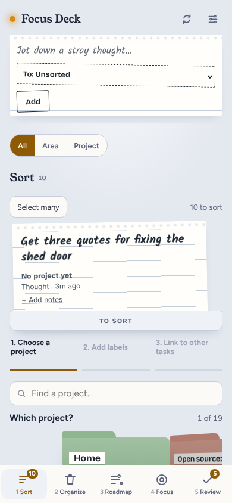

<!doctype html>
<html lang="en"><head><meta charset="utf-8"><title>Step by step mockups</title>
<link href="https://fonts.googleapis.com/css2?family=Figtree:wght@400;600;700&family=Fraunces:opsz,wght@9..144,600&family=Kalam:wght@400;700&display=swap" rel="stylesheet">
<style>
/* Drawings for the step-by-step redesign (QA of #248 failed: too busy). Not the app; shot by shoot-mockups.mjs. */
:root{--bg:#E4E8EF;--surface:#FBFAF7;--ink:#1C2438;--soft:#59627A;--faint:#8A93A8;--line:#C7CEDB;--accent:#8F5A06;--paper:#FFFEFA;--note:#FFE27A;--folder:#F1E6CC;--red:#B42318}
*{box-sizing:border-box}body{margin:0;background:#fff;font:16px/1.4 Figtree,system-ui,sans-serif;color:var(--ink)}
.row{display:flex;gap:28px;padding:24px;align-items:flex-start;flex-wrap:nowrap;width:max-content}
.cap{font:600 15px Figtree;color:var(--soft);margin:0 0 8px;max-width:300px}
.phone{width:300px;height:640px;background:var(--bg);border-radius:28px;border:8px solid #1d2230;position:relative;overflow:hidden;display:flex;flex-direction:column}
.top{display:flex;align-items:center;justify-content:space-between;padding:12px 16px 6px}
.logo{font:600 18px Fraunces,serif;display:flex;align-items:center;gap:8px}.logo:before{content:"";width:9px;height:9px;border-radius:50%;background:#D98A12}
.gear{font-size:18px;color:var(--soft)}
.ctx{margin:0 16px 6px;font-size:13px;color:var(--soft)}.ctx b{color:var(--ink)}
.prog{margin:4px 16px 0;display:flex;gap:4px}.prog i{flex:1;height:5px;border-radius:3px;background:var(--line)}.prog i.on{background:var(--accent)}
.stepname{margin:6px 16px 0;font-size:13px;color:var(--soft)}
h2{font:600 24px/1.2 Fraunces,serif;margin:10px 16px 4px}
.sub{margin:0 16px 10px;color:var(--soft);font-size:14px}
.body{flex:1;padding:0 16px;display:flex;flex-direction:column;gap:10px;overflow:hidden}
.choice{background:var(--surface);border:2px solid var(--line);border-radius:14px;padding:14px 16px;font-weight:600;display:flex;justify-content:space-between;align-items:center}
.choice small{font-weight:400;color:var(--soft)}
.choice.on{border-color:var(--accent);background:#F6EBD7}
.foot{padding:10px 16px 12px;display:flex;align-items:center;gap:12px}
.back{color:var(--soft);font-weight:600;font-size:15px}
.primary{flex:1;background:var(--accent);color:#fff;border-radius:14px;padding:14px;text-align:center;font-weight:700}
.primary.off{opacity:.45}
.skip{color:var(--accent);font-weight:600;font-size:15px}
.tabs{display:flex;background:var(--surface);border-top:1px solid var(--line);padding:6px 0 10px}
.tabs span{flex:1;text-align:center;font-size:11px;color:var(--soft)}.tabs span.on{color:var(--accent);font-weight:700}
.tabs span b{display:block;font-size:17px;font-weight:400}
.slip{background:var(--paper);border-radius:6px;box-shadow:0 2px 6px rgba(40,52,80,.2);padding:12px 14px;font:700 19px/1.25 Kalam,cursive;margin:0 16px 8px}
.chips{display:flex;flex-wrap:wrap;gap:8px}.chip{border:2px solid var(--line);background:var(--surface);border-radius:999px;padding:8px 14px;font-weight:600;font-size:14px}.chip.on{border-color:var(--accent);background:#F6EBD7}
.folders{display:flex;gap:10px;overflow:hidden}.folder{flex:0 0 150px;height:96px;background:var(--folder);border-radius:4px 12px 12px 12px;padding:12px;font-weight:700;position:relative;margin-top:12px}
.folder:before{content:"";position:absolute;top:-12px;left:0;width:70px;height:14px;background:inherit;border-radius:8px 8px 0 0}
.folder.on{outline:3px solid var(--accent)}.folder small{display:block;font-weight:400;color:var(--soft);margin-top:20px}
.find{border:2px solid var(--line);border-radius:12px;padding:10px 12px;color:var(--faint);background:var(--surface)}
.summary{background:var(--surface);border-radius:14px;border:1px solid var(--line)}
.summary div{display:flex;justify-content:space-between;padding:10px 14px;border-top:1px solid var(--line);font-size:14px}.summary div:first-child{border:0}
.summary span{color:var(--soft)}.summary a{color:var(--accent);font-weight:600}
.fab{position:absolute;right:16px;bottom:150px;background:var(--ink);color:#fff;border-radius:999px;padding:12px 18px;font-weight:700;box-shadow:0 4px 10px rgba(0,0,0,.25)}
.note{background:var(--note);margin:6px 16px;padding:16px;border-radius:4px;font:700 22px/1.25 Kalam,cursive;box-shadow:0 4px 10px rgba(0,0,0,.18);transform:rotate(-1deg)}
.note small{display:block;font:400 13px Figtree;color:#6B5520;margin-bottom:6px}
.card{background:var(--surface);border:1px solid var(--line);border-radius:14px;padding:14px}
.card h3{margin:0 0 4px;font-size:17px}.card p{margin:0;color:var(--soft);font-size:14px}
.two{display:flex;gap:10px}.two .choice{flex:1;justify-content:center}
.bar{height:8px;border-radius:4px;background:var(--line);overflow:hidden}.bar i{display:block;height:100%;background:var(--red)}
.list .card{margin-bottom:8px;padding:10px 14px}
.muted{color:var(--soft);font-size:14px}
.desk{width:1000px;height:620px;background:var(--bg);border-radius:12px;border:1px solid var(--line);display:flex;overflow:hidden}
.rail{width:200px;background:var(--surface);padding:16px;display:flex;flex-direction:column;gap:14px;font-weight:600;color:var(--soft)}
.rail .on{color:var(--accent)}
.deskmain{flex:1;display:flex;flex-direction:column;align-items:center;padding:24px}
.panel{width:560px;background:var(--surface);border-radius:18px;border:1px solid var(--line);padding:20px 24px;display:flex;flex-direction:column;gap:12px}
.panel h2{margin:4px 0}.panel .prog{margin:0}.panel .stepname{margin:0}
.stepsbox{width:220px;margin-left:24px;align-self:flex-start;font-size:14px;color:var(--soft);display:flex;flex-direction:column;gap:8px;padding-top:40px}
.stepsbox .done{color:var(--ink)}.stepsbox .now{color:var(--accent);font-weight:700}
.before{opacity:.95}
.tag{display:inline-block;background:#1d2230;color:#fff;font-size:12px;border-radius:6px;padding:2px 8px;margin-bottom:6px}
</style></head><body>
<div id="frames"></div>
<script>
const T = (on) => '<div class="tabs">' + [['☰','1 Sort'],['🗑','2 Organize'],['≡','3 Roadmap'],['◎','4 Focus'],['✓','5 Review']].map(([i,n]) => '<span class="' + (n.includes(on) ? 'on' : '') + '"><b>' + i + '</b>' + n + '</span>').join('') + '</div>';
const P = (o) => '<div><p class="cap">' + o.cap + '</p><div class="phone">'
  + '<div class="top"><span class="logo">Focus Deck</span><span class="gear">⚙</span></div>'
  + (o.ctx ? '<p class="ctx">Showing <b>' + o.ctx + ' ▾</b>' + (o.more ? '<span style="float:right;font-weight:700">⋯</span>' : '') + '</p>' : '')
  + (o.step ? (o.of > 8 ? '' : '<div class="prog">' + Array.from({length:o.of},(_, i) => '<i class="' + (i < o.step ? 'on' : '') + '"></i>').join('') + '</div>') + '<p class="stepname">' + (o.of > 8 ? 'Task ' : 'Step ') + o.step + ' of ' + o.of + (o.opt ? ' · optional' : '') + '</p>' : '')
  + (o.slip ? '<div class="slip" style="margin-top:8px">' + o.slip + '</div>' : '')
  + (o.h ? '<h2>' + o.h + '</h2>' : '') + (o.sub ? '<p class="sub">' + o.sub + '</p>' : '')
  + '<div class="body">' + (o.body || '') + '</div>'
  + (o.foot === false ? '' : '<div class="foot">' + (o.back ? '<span class="back">‹ Back</span>' : '') + (o.skip ? '<span class="skip">Skip</span>' : '') + '<span class="primary' + (o.off ? ' off' : '') + '">' + (o.btn || 'Next') + '</span></div>')
  + (o.fab ? '<span class="fab">+ Jot</span>' : '')
  + T(o.tab || 'Sort') + '</div></div>';
const C = (t, on, small) => '<div class="choice' + (on ? ' on' : '') + '">' + t + (small ? '<small>' + small + '</small>' : '') + '</div>';
const chips = (a, on) => '<div class="chips">' + a.map((x) => '<span class="chip' + (on.includes(x) ? ' on' : '') + '">' + x + '</span>').join('') + '</div>';
const slip = 'Get three quotes for fixing the shed door';
const rows = {
 add: [
  P({cap:'1. Which project? The same folders as Focus, nothing else on screen.', step:1, of:7, slip, h:'Which project?', body:'<div class="find">Find a project…</div><div class="folders"><div class="folder on">Home<small>12 open</small></div><div class="folder">Garden<small>4 open</small></div></div><p class="muted">Swipe for more · 1 of 19</p>', btn:'Next: priority'}),
  P({cap:'2. How important? Four big buttons. Next stays off until you pick.', step:2, of:7, back:1, slip, h:'How important is it?', body:C('Urgent','', 'today, or it hurts')+C('High',1,'this week')+C('Medium','','soon')+C('Low','','whenever'), btn:'Next: labels'}),
  P({cap:'3. Labels, optional. The kinds of work you ticked, plus “new label”.', step:3, of:7, opt:1, back:1, skip:1, slip, h:'What kind of work?', sub:'Pick any, or skip.', body:chips(['Repair','Call','Buy','Outside','Quick win','Errand','+ New label'],['Repair','Call']), btn:'Next: due date'}),
  P({cap:'4. Due date, optional.', step:4, of:7, opt:1, back:1, skip:1, slip, h:'When is it due?', body:C('Today')+C('Tomorrow')+C('Friday',1)+C('Next week')+C('Pick a date…'), btn:'Next: waits on'}),
  P({cap:'5. Waits on, optional: what has to happen first.', step:5, of:7, opt:1, back:1, skip:1, slip, h:'Does it wait on anything?', sub:'A task that has to be done first.', body:'<div class="find">Find a task…</div>'+C('Pay council tax','', 'Finances')+C('Measure the door',1,'Home'), btn:'Next: holds up'}),
  P({cap:'6. Holds up, optional: what can’t start until this is done.', step:6, of:7, opt:1, back:1, skip:1, slip, h:'Does anything wait on this?', sub:'Tasks that can’t start until this is done.', body:'<div class="find">Find a task…</div>'+C('Rehang the shed door','', 'Home'), btn:'Next: check'}),
  P({cap:'7. Check it, then save. Each line has Change, which jumps back to that step.', step:7, of:7, back:1, slip, h:'Check it', body:'<div class="summary"><div><span>Project</span>Home <a>Change</a></div><div><span>Priority</span>High <a>Change</a></div><div><span>Labels</span>Repair, Call <a>Change</a></div><div><span>Due</span>Friday <a>Change</a></div><div><span>Waits on</span>Measure the door <a>Change</a></div><div><span>Holds up</span>none <a>Change</a></div></div>', btn:'Save to Home'})],
 chrome: [
  '<div><p class="cap">Today: header, jot box, switch and tabs fill the top 40% before any work shows. (Your screenshot.)</p></div>',
  P({cap:'Proposed: one line says what you’re looking at; the jot box becomes a “+ Jot” button that opens on its own screen.', ctx:'All tasks', h:'Sort', sub:'10 thoughts to sort. One at a time.', body:'<div class="slip" style="margin:0">'+slip+'</div><p class="muted">Thought · 3 minutes ago</p>', btn:'Sort this one', fab:1}),
  P({cap:'+ Jot opens a screen with only the box. Enter saves it to Sort; you stay where you were.', foot:true, h:'Jot a thought', body:'<div class="slip" style="margin:0;min-height:120px;color:#8A93A8">Type it here…</div><p class="muted">It goes to Sort. You can sort it later.</p>', btn:'Save thought'})],
 focus: [
  P({cap:'Focus step 1: pick a project. Or one button picks for you.', tab:'Focus', ctx:'All tasks', step:1, of:2, h:'Which project?', body:'<div class="folders"><div class="folder on">All projects<small>68 open</small></div><div class="folder">Home<small>12 open</small></div></div><p class="muted">Swipe for more · 1 of 20</p><p style="color:#8F5A06;font-weight:700">Or let me pick for you</p>', btn:'Next: kind of work'}),
  P({cap:'Focus step 2: what kind of work. Skip means any.', tab:'Focus', step:2, of:2, back:1, skip:1, h:'What kind of work?', body:'<div class="folders"><div class="folder on" style="background:#fff">Call<small>6 open</small></div><div class="folder" style="background:#fff">Buy<small>4 open</small></div></div>', btn:'Show me one task'}),
  P({cap:'One task, two buttons. Everything else is behind “More”.', tab:'Focus', foot:false, body:'<div class="note" style="margin:10px 0"><small>Home · High</small>Renew passport before the Lisbon trip</div><div class="two">'+C('I’ve done it',1)+C('Not this one')+'</div><p class="muted" style="text-align:center">More ▾</p>'})],
 organize: [
  P({cap:'Tidy up shows one task at a time, with the reason it’s here.', tab:'Organize', ctx:'Home', step:3, of:25, h:'Not touched in 60 days', sub:'Do you still want this?', body:'<div class="card"><h3>Clear out the loft</h3><p>Home · added 90 days ago</p></div><div class="two">'+C('Keep')+C('Close')+'</div>', foot:false}),
  P({cap:'At the end you see what will close, and confirm once. Undo stays on the Done list.', tab:'Organize', ctx:'Home', h:'Close 4 tasks?', body:'<div class="summary"><div>Clear out the loft <a>Keep instead</a></div><div>Old shelf plan <a>Keep instead</a></div><div>Mop the kitchen (copy) <a>Keep instead</a></div><div>Fix the gate latch <a>Keep instead</a></div></div>', back:1, btn:'Close 4, then Triage'}),
  P({cap:'Triage shows Now only. Next and Later fold away. “Move” turns on the arrows.', tab:'Organize', ctx:'Home', h:'Do these first', sub:'Picked by the 7 rules. Move one if you disagree.', body:'<div class="list"><div class="card"><h3>1 · Renew passport</h3><p>Needs review</p></div><div class="card"><h3>2 · Draft the volunteer rota</h3><p>In progress</p></div><div class="card"><h3>3 · Contact form sends twice</h3><p>Due today</p></div></div><p class="muted">Next (8) ▸ · Later (57) ▸</p>', btn:'Move…'})],
 roadmap: [
  P({more:1, cap:'Roadmap, one project: one milestone at a time, one column at a time. Edit, New and Sync go in the ⋯ menu.', tab:'Roadmap', ctx:'Open source: focus-deck', h:'Start here screen', sub:'Milestone 1 of 4 · 2 of 5 done', body:'<div class="bar"><i style="width:40%"></i></div><div class="chips"><span class="chip on">Up next 1</span><span class="chip">Doing 1</span><span class="chip">Review 1</span><span class="chip">Done 2</span></div><div class="card"><h3>Test on phone</h3><p>High</p></div><p class="muted">‹ Previous milestone · Next milestone ›</p>', btn:'+ Add a task'}),
  P({cap:'Tapping a task opens a sheet with what you can do to it, one list.', tab:'Roadmap', h:'Test on phone', sub:'Up next · High', body:C('Start it (In progress)')+C('Send to Review')+C('Mark done')+C('Edit details ›')+C('Move to another milestone ›'), foot:false}),
  P({cap:'Milestone settings in two steps: how much it counts, then how to measure it.', tab:'Roadmap', step:1, of:2, h:'How much does it count?', sub:'Start here screen, in Open source: focus-deck', body:'<div class="bar" style="height:14px"><i style="width:40%;background:var(--accent)"></i></div><p><b>40%</b> of the project. The other 3 share 60%.</p>', btn:'Next: how to measure'})],
};
const desk = '<div><p class="cap" style="max-width:none">On a computer: the same steps in one panel in the middle, with the list of steps beside it. Tabs stay on the left.</p><div class="desk"><div class="rail"><span>☰ 1 Sort</span><span>🗑 2 Organize</span><span>≡ 3 Roadmap</span><span>◎ 4 Focus</span><span>✓ 5 Review</span></div><div class="deskmain"><div style="display:flex"><div class="panel"><div class="prog"><i class="on"></i><i class="on"></i><i></i><i></i><i></i><i></i><i></i></div><p class="stepname">Step 2 of 7</p><div class="slip" style="margin:0">'+slip+'</div><h2>How important is it?</h2>'+C('Urgent','','today, or it hurts')+C('High',1,'this week')+C('Medium','','soon')+C('Low','','whenever')+'<div class="foot" style="padding:0"><span class="back">‹ Back</span><span class="primary">Next: labels</span></div></div><div class="stepsbox"><span class="done">✓ Project: Home</span><span class="now">● Priority</span><span>Labels</span><span>Due date</span><span>Waits on</span><span>Holds up</span><span>Check</span></div></div></div></div></div>';
document.getElementById('frames').innerHTML = Object.entries(rows).map(([k, v]) => '<div class="row" id="' + k + '">' + v.join('') + '</div>').join('') + '<div class="row" id="desk">' + desk + '</div>';
</script></body></html>
